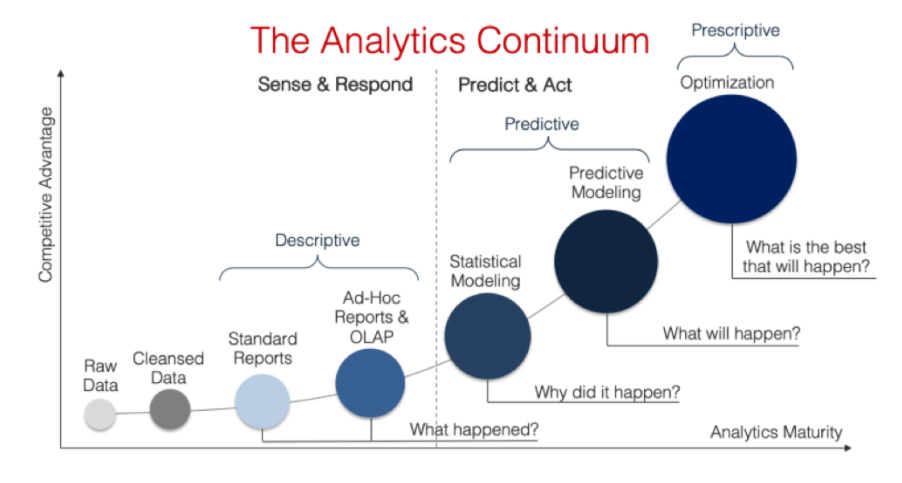
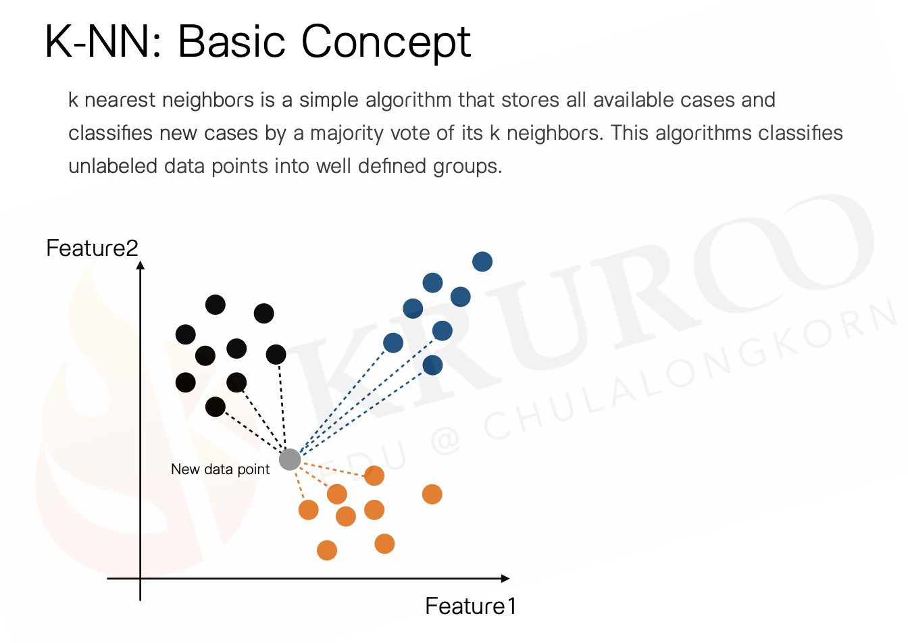

Types of Data Analytics

สถานการณ์
นักวิเคราะห์ต้องการทำนายเงินเดือนของอาจารย์มหาวิทยาลัย ด้วยตัวแปรทำนายได้แก่ เพศ ตำแหน่งทางวิชาการ สาขาวิชา ประสบการณ์ในการเป็นอาจารย์ และประสบการณ์ทำงานตั้งแต่จบปริญญาเอก
library (readr)<- read_csv ("TeacherSalaryData.csv" )
New names:
Rows: 397 Columns: 7
── Column specification
──────────────────────────────────────────────────────── Delimiter: "," chr
(3): rank, discipline, sex dbl (4): ...1, yrs.since.phd, yrs.service, salary
ℹ Use `spec()` to retrieve the full column specification for this data. ℹ
Specify the column types or set `show_col_types = FALSE` to quiet this message.
• `` -> `...1`
# A tibble: 6 × 7
...1 rank discipline yrs.since.phd yrs.service sex salary
<dbl> <chr> <chr> <dbl> <dbl> <chr> <dbl>
1 1 Prof B 19 18 Male 139750
2 2 Prof B 20 16 Male 173200
3 3 AsstProf B 4 3 Male 79750
4 4 Prof B 45 39 Male 115000
5 5 Prof B 40 41 Male 141500
6 6 AssocProf B 6 6 Male 97000
มโนทัศน์ของการพัฒนาโมเดลทำนาย
เราต้องการโมเดลทำนายที่มีคุณสมบัตื
Unbiased
Minimum variance
กระบวนการพัฒนาโมเดลทำนาย
Resampling
K-fold cross-validation
Bootstraping
K-fold cross-validation
package-rsample ใช้ในงาน resampling ข้อมูล เช่นการสร้าง training/validation/test dataset การสร้าง cross-validation dataset หรือการสร้าง bootstrape dataset ซึ่งได้กล่าวการใช้งานเบื้องต้นไปแล้ว
package-recipes ใช้แปลง/แก้ปัญหาที่เกิดขึ้นในข้อมูลของตัวแปรที่ใช้ในการพัฒนาโมเดล ขั้นตอนนี้เรียกว่า feature engineering
package-parsnip ใช้ fit machine learning กับข้อมูล โมเดลที่สามารถ fit ได้จาก parsnip มีหลายโมเดล เช่น linear regression, logistic regression, random forest, support vector machine, neural network, gradient boosting machine, etc. ผู้เรียนสามารถอ้างอิงการระบุโมเดลต่าง ๆ จาก https://www.tidymodels.org/find/parsnip/
package-Tune และ package-dials มีฟังก์ชันที่อำนวยความสะดวกในการ fine tune hyperparameter ของโมเดลเพื่อเพิ่มประสิทธิภาพการทำนายของโมเดลให้สูงที่สุด
package-yardstick มีฟังก์ชันของ metric ที่ใช้ประเมินประสิทธิภาพของโมเดลทำนาย ตัวชี้วัดสำหรับโมเดล regression ได้แก่ RMSE, MAE, MAPE, R-squared, etc.
RMSE
\[
RMSE = \sqrt\frac{\sum_{i=1}^n(y_i-\hat{y}_i)^2}{n}
\]
R-squared
\[
R^2=Corr(y,\hat{y})^2
\]
tidymodels ถูกพัฒนาขึ้นโดยได้รับการออกแบบให้สามารถทำซ้ำกระบวนการพัฒนาโมเดลได้ง่าย โดยใช้ไวยกรณ์ของภาษาในลักษณะเดียวกัน และถูกออกแบบโดยเน้นใช้กับ supervised learning เป็นหลัก ผู้ใช้งานไม่จำเป็นต้องติดตั้งทุก package ในข้างต้นด้วยตนเอง แต่ติดตั้งเพียง package-tidymodels ก็สามารถใช้งานทุก package ภายใต้ framework ดังกล่าวได้แล้ว โดยการพิมพ์คำสั่งต่อไปนี้
#install.packages("tidymodels") library (tidymodels)
ขั้นตอนการพัฒนาโมเดลด้วย tidymodels framework มีดังนี้
1. แบ่งชุดข้อมูลออกเป็น training และ test set
set.seed (123 )<- initial_split (dat, prop = 0.8 )<- training (split)<- testing (split)
2. สำรวจข้อมูลเบื้องต้น
library (DataExplorer)plot_intro (train)plot_missing (train)plot_bar (train)plot_histogram (train)plot_correlation (train)
|> ggplot (aes (x= yrs.service, y= salary))+ geom_point ()+ geom_smooth (aes (col = discipline), method = "lm" )
`geom_smooth()` using formula = 'y ~ x'
|> ggplot (aes (x= yrs.since.phd, y= salary))+ geom_point ()+ geom_smooth (aes (col = discipline), method = "lm" )
`geom_smooth()` using formula = 'y ~ x'
|> ggplot (aes (x= rank, y= salary))+ geom_boxplot (aes (fill = discipline))
3. สร้าง recipe สำหรับทำ data preprocessing ใน training set
### recipe1: no interaction <- recipe (salary ~ ., data = train) |> step_select (- 1 ) |> step_mutate (rank = factor (rank, levels= c ("AsstProf" , "AssocProf" , "Prof" )),discipline = factor (discipline, labels= c ("science" ,"social" ))) |> step_normalize (all_numeric_predictors ()) |> step_dummy (all_nominal_predictors ()) |> prep (train) ### recipe2: with interaction <- recipe (salary ~ ., data = train) |> step_select (- 1 ) |> step_mutate (rank = factor (rank, levels= c ("AsstProf" , "AssocProf" , "Prof" )),discipline = factor (discipline, labels= c ("science" ,"social" ))) |> step_normalize (all_numeric_predictors ()) |> step_interact (terms = ~ yrs.service: discipline) |> step_dummy (all_nominal_predictors ()) |> prep (train)
4. สร้าง model specification และ fit model ใน training set
ในกรณีนี้จะลองใช้ 3 โมเดล คือ linear regression, regularized regression และ KNN
ประเภทของ regularization จำแนกได้ 3 ประเภท ได้แก่
ridge regression
lasso regression
elastic net regression
หลักการคร่าว ๆ ของ ridge regression
ฟังก์ชันวัตถุประสงค์ของ regularized regression ประเภท ridge regression สามารถเขียนได้ดังนี้
\[
\underset{\beta}{min}\left\{SSE+\lambda\sum_{j=1}^p\beta_j^2\right\}
\]
lasso regression
Lasso regression เป็นอัลกอริทึมที่ถูกพัฒนาขึ้นโดยมีวัตถุประสงค์หลักคือการคัดเลือกตัวแปรอิสระ (feature selection) เข้าสู่โมเดลทำนาย อัลกอริทึมนี้เป็น feature selection ที่จัดอยู่ในกลุ่ม embedded method กล่าวคือเป็นอัลกอริทึมการเรียนรู้ที่มีอัลกอริทึมของการคัดเลือกตัวแปรอิสระรวมอยู่ในขั้นตอนการประมาณค่าพารามิเตอร์ของโมเดล หลักการของ lasso regression เหมือนกับ ridge regression แต่มีการใช้ penalty term ในฟังก์ชันวัตถุประสงค์ที่แตกต่างออกไปดังนี้
\[
\underset{\beta}{min}\left\{SSE+\lambda\sum_{j=1}^p|\beta_j|\right\}
\]
KNN

<- linear_reg () %>% set_engine ("lm" ) %>% set_mode ("regression" )<- linear_reg (penalty = tune (), mixture = 0 ) %>% set_engine ("glmnet" ) %>% set_mode ("regression" )<- nearest_neighbor (weight_func = "gaussian" , neighbors = tune ()) %>% set_engine ("kknn" ) %>% set_mode ("regression" )<- rand_forest (trees = 500 , mtry = tune (), min_n = tune ()) %>% set_engine ("ranger" ) %>% set_mode ("regression" )
5. สร้าง workflowset และ tune พารามิเตอร์
<- workflow_set (preproc = list (rec_noint = rec_noint, rec_int = rec_int, rec_noint = rec_noint, rec_noint = rec_noint),models = list (ols = ols_reg,ridge = ridge_reg,knn = knn_reg,rand_forest = rand_forestcross = FALSE
# A workflow set/tibble: 4 × 4
wflow_id info option result
<chr> <list> <list> <list>
1 rec_noint_ols <tibble [1 × 4]> <opts[0]> <list [0]>
2 rec_int_ridge <tibble [1 × 4]> <opts[0]> <list [0]>
3 rec_noint_knn <tibble [1 × 4]> <opts[0]> <list [0]>
4 rec_noint_rand_forest <tibble [1 × 4]> <opts[0]> <list [0]>
กำหนด evaluation metric และ tune hyperparameter เมื่อทำการ train เสร็จ tidymodel จะให้ผลลัพธ์เป็น tibble ที่บรรจุผลการ train ของแต่ละโมเดลเอาไว้
## กำหนด evaluation metric <- metric_set (rmse, rsq)<- my_workflowset |> workflow_map (grid = 10 ,resamples = vfold_cv (train, v = 5 , repeats = 3 ),metrics = eval_metric
i Creating pre-processing data to finalize unknown parameter: mtry
# A workflow set/tibble: 4 × 4
wflow_id info option result
<chr> <list> <list> <list>
1 rec_noint_ols <tibble [1 × 4]> <opts[3]> <rsmp[+]>
2 rec_int_ridge <tibble [1 × 4]> <opts[3]> <tune[+]>
3 rec_noint_knn <tibble [1 × 4]> <opts[3]> <tune[+]>
4 rec_noint_rand_forest <tibble [1 × 4]> <opts[3]> <tune[+]>
6. ประเมินผลลัพธ์ของโมเดล
|> autoplot ()|> rank_results ()
# A tibble: 62 × 9
wflow_id .config .metric mean std_err n preprocessor model rank
<chr> <chr> <chr> <dbl> <dbl> <int> <chr> <chr> <int>
1 rec_noint_knn Preproc… rmse 2.28e+4 6.44e+2 15 recipe near… 1
2 rec_noint_knn Preproc… rsq 4.55e-1 2.14e-2 15 recipe near… 1
3 rec_noint_knn Preproc… rmse 2.28e+4 6.59e+2 15 recipe near… 2
4 rec_noint_knn Preproc… rsq 4.55e-1 2.22e-2 15 recipe near… 2
5 rec_noint_knn Preproc… rmse 2.28e+4 6.61e+2 15 recipe near… 3
6 rec_noint_knn Preproc… rsq 4.54e-1 2.14e-2 15 recipe near… 3
7 rec_noint_knn Preproc… rmse 2.28e+4 6.46e+2 15 recipe near… 4
8 rec_noint_knn Preproc… rsq 4.52e-1 2.10e-2 15 recipe near… 4
9 rec_noint_knn Preproc… rmse 2.29e+4 6.45e+2 15 recipe near… 5
10 rec_noint_knn Preproc… rsq 4.50e-1 2.06e-2 15 recipe near… 5
# ℹ 52 more rows
|> collect_metrics () |> filter (.metric == "rsq" ) |> arrange (desc (mean))
# A tibble: 31 × 9
wflow_id .config preproc model .metric .estimator mean n std_err
<chr> <chr> <chr> <chr> <chr> <chr> <dbl> <int> <dbl>
1 rec_noint_knn Preproces… recipe near… rsq standard 0.455 15 0.0214
2 rec_noint_knn Preproces… recipe near… rsq standard 0.455 15 0.0222
3 rec_noint_knn Preproces… recipe near… rsq standard 0.454 15 0.0214
4 rec_noint_knn Preproces… recipe near… rsq standard 0.452 15 0.0210
5 rec_noint_knn Preproces… recipe near… rsq standard 0.450 15 0.0206
6 rec_noint_knn Preproces… recipe near… rsq standard 0.446 15 0.0217
7 rec_noint_knn Preproces… recipe near… rsq standard 0.440 15 0.0218
8 rec_int_ridge Preproces… recipe line… rsq standard 0.440 15 0.0222
9 rec_int_ridge Preproces… recipe line… rsq standard 0.440 15 0.0222
10 rec_int_ridge Preproces… recipe line… rsq standard 0.440 15 0.0222
# ℹ 21 more rows
7. คัด best model ไปตรวจสอบผลลัพธ์ในข้อมูล test
### วิเคราะห์ OLS |> extract_workflow_set_result (id = "rec_noint_ols" ) |> collect_metrics (summarise = T) |> filter (.metric == "rsq" ) |> arrange (- mean)
# A tibble: 1 × 6
.metric .estimator mean n std_err .config
<chr> <chr> <dbl> <int> <dbl> <chr>
1 rsq standard 0.437 15 0.0174 Preprocessor1_Model1
### วิเคราะห์ Ridge Regression |> extract_workflow_set_result (id = "rec_int_ridge" ) |> collect_metrics (summarise = T) |> filter (.metric == "rsq" ) |> arrange (- mean)
# A tibble: 10 × 7
penalty .metric .estimator mean n std_err .config
<dbl> <chr> <chr> <dbl> <int> <dbl> <chr>
1 2.48e-10 rsq standard 0.440 15 0.0222 Preprocessor1_Model01
2 1.24e- 9 rsq standard 0.440 15 0.0222 Preprocessor1_Model02
3 4.59e- 8 rsq standard 0.440 15 0.0222 Preprocessor1_Model03
4 1.75e- 7 rsq standard 0.440 15 0.0222 Preprocessor1_Model04
5 3.49e- 6 rsq standard 0.440 15 0.0222 Preprocessor1_Model05
6 4.85e- 5 rsq standard 0.440 15 0.0222 Preprocessor1_Model06
7 3.47e- 4 rsq standard 0.440 15 0.0222 Preprocessor1_Model07
8 2.79e- 3 rsq standard 0.440 15 0.0222 Preprocessor1_Model08
9 6.49e- 2 rsq standard 0.440 15 0.0222 Preprocessor1_Model09
10 3.69e- 1 rsq standard 0.440 15 0.0222 Preprocessor1_Model10
<- train_result |> extract_workflow_set_result (id = "rec_int_ridge" ) |> show_best ("rsq" , n = 1 )### วิเคราะห์ KNN algorithm <- train_result |> extract_workflow_set_result (id = "rec_noint_knn" ) |> collect_metrics (summarise = T) |> filter (.metric == "rsq" ) |> arrange (- mean)<- train_result |> extract_workflow_set_result (id = "rec_noint_knn" ) |> show_best ("rsq" , n = 1 )### วิเคราะห์ Random Forest |> extract_workflow_set_result (id = "rec_noint_rand_forest" ) |> collect_metrics (summarise = T) |> filter (.metric == "rsq" ) |> arrange (- mean)
# A tibble: 10 × 8
mtry min_n .metric .estimator mean n std_err .config
<int> <int> <chr> <chr> <dbl> <int> <dbl> <chr>
1 1 12 rsq standard 0.438 15 0.0169 Preprocessor1_Model06
2 2 27 rsq standard 0.434 15 0.0165 Preprocessor1_Model03
3 3 9 rsq standard 0.434 15 0.0172 Preprocessor1_Model07
4 3 4 rsq standard 0.432 15 0.0186 Preprocessor1_Model04
5 2 33 rsq standard 0.429 15 0.0166 Preprocessor1_Model02
6 4 16 rsq standard 0.428 15 0.0177 Preprocessor1_Model01
7 5 24 rsq standard 0.427 15 0.0192 Preprocessor1_Model09
8 5 32 rsq standard 0.426 15 0.0192 Preprocessor1_Model10
9 4 17 rsq standard 0.425 15 0.0182 Preprocessor1_Model08
10 6 39 rsq standard 0.423 15 0.0191 Preprocessor1_Model05
<- train_result |> extract_workflow_set_result (id = "rec_noint_rand_forest" ) |> show_best ("rsq" , n = 1 )
8. ประเมินผลใน test data
เมื่อคัดเลือก best model ของแต่ละอัลกอริทึมได้แล้ว จะ train ใหม่กับข้อมูลทั้งหมด เพื่อนำไปตรวจสอบใน test data
<- train_result |> extract_workflow (id = "rec_noint_ols" ) |> fit (train)<- train_result |> extract_workflow (id = "rec_int_ridge" ) |> finalize_workflow (best_ridge) |> fit (train)<- train_result |> extract_workflow (id = "rec_noint_knn" ) |> finalize_workflow (best_knn) |> fit (train)<- train_result |> extract_workflow (id = "rec_noint_rand_forest" ) |> finalize_workflow (best_rf) |> fit (train)
นำโมเดลทั้งหมดไปทำนาย salary ใน test
## data preprocessing <- rec_noint |> bake (test)<- rec_int |> bake (test)## ทำนาย <- ols_trained |> extract_fit_parsnip () |> predict (test_noint) |> bind_cols (test_noint) |> select (salary, .pred)<- ridge_trained |> extract_fit_parsnip () |> predict (test_int) |> bind_cols (test_int) |> select (salary, .pred)<- knn_trained |> extract_fit_parsnip () |> predict (test_noint) |> bind_cols (test_noint) |> select (salary, .pred)<- rf_trained |> extract_fit_parsnip () |> predict (test_noint) |> bind_cols (test_noint) |> select (salary, .pred)<- bind_rows (|> mutate (model = "ols" ),|> mutate (model = "ridge" ),|> mutate (model = "knn" ),|> mutate (model = "rf" )|> ggplot (aes (x = salary, y = .pred)) + geom_point () + geom_smooth (method = "lm" , se = F)+ facet_wrap (~ model, scales = "fixed" )
`geom_smooth()` using formula = 'y ~ x'


 จากผลในข้างต้นจะเห็นว่า ridge regression เป็นเทคนิคที่ช่วยปรับขนาดของสัมประสิทธิ์ความชันของตัวแปรอิสระในโมเดลให้มีค่าลดลง แต่จะไม่ได้ทำให้เป็น 0 ดังนั้นตัวแปรอิสระทั้งหมดที่ผู้วิเคราะห์นำเข้าในอัลกอริทึมตอนแรกนั้นจะอยู่ในโมเดลทำนายครบทุกตัว แต่จะถูกปรับลดขนาดของค่าสัมประสิทธิ์ความชันลง ดังนั้น ridge regression จึงไม่ใช่เทคนิคสำหรับคัดเลือกตัวแปรอิสระ แต่เป็นเทคนิคที่เหมาะสำหรับแก้ปัญหา multicollinearity มากกว่า ดังนั้น ridge regression จึงเหมาะที่จะใช้ในสถานการณ์ที่ผู้วิเคราะห์มีตัวแปรอิสระจำนวนมากและตัวแปรดังกล่าวมีความสัมพันธ์กันเองสูงหรือมีความซ้ำซ้อนกัน แต่ผู้วิเคราะห์ไม่ต้องการที่จะตัดตัวแปรอิสระตัวใดออกจากโมเดลทำนาย อัลกอริทึม ridge regression จะช่วยให้ผู้วิเคราะห์สามารถสร้างโมเดลทำนายที่มีตัวแปรอิสระทั้งหมดอยู่ภายในโมเดลโดยหลีกเลี่ยงหรือลดทอนผลกระทบที่เกิดจากปัญหา multicollinearity ได้
จากผลในข้างต้นจะเห็นว่า ridge regression เป็นเทคนิคที่ช่วยปรับขนาดของสัมประสิทธิ์ความชันของตัวแปรอิสระในโมเดลให้มีค่าลดลง แต่จะไม่ได้ทำให้เป็น 0 ดังนั้นตัวแปรอิสระทั้งหมดที่ผู้วิเคราะห์นำเข้าในอัลกอริทึมตอนแรกนั้นจะอยู่ในโมเดลทำนายครบทุกตัว แต่จะถูกปรับลดขนาดของค่าสัมประสิทธิ์ความชันลง ดังนั้น ridge regression จึงไม่ใช่เทคนิคสำหรับคัดเลือกตัวแปรอิสระ แต่เป็นเทคนิคที่เหมาะสำหรับแก้ปัญหา multicollinearity มากกว่า ดังนั้น ridge regression จึงเหมาะที่จะใช้ในสถานการณ์ที่ผู้วิเคราะห์มีตัวแปรอิสระจำนวนมากและตัวแปรดังกล่าวมีความสัมพันธ์กันเองสูงหรือมีความซ้ำซ้อนกัน แต่ผู้วิเคราะห์ไม่ต้องการที่จะตัดตัวแปรอิสระตัวใดออกจากโมเดลทำนาย อัลกอริทึม ridge regression จะช่วยให้ผู้วิเคราะห์สามารถสร้างโมเดลทำนายที่มีตัวแปรอิสระทั้งหมดอยู่ภายในโมเดลโดยหลีกเลี่ยงหรือลดทอนผลกระทบที่เกิดจากปัญหา multicollinearity ได้